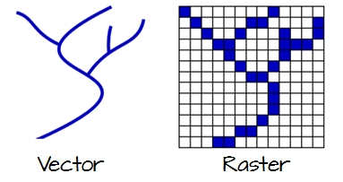
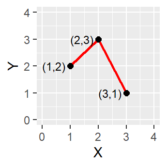
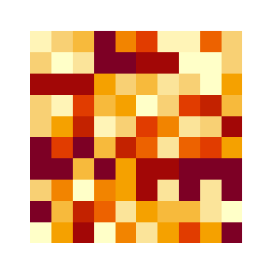
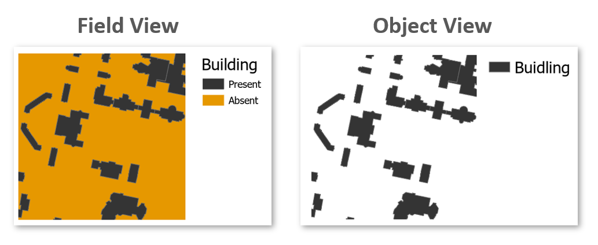
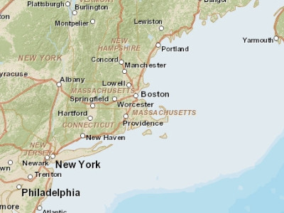
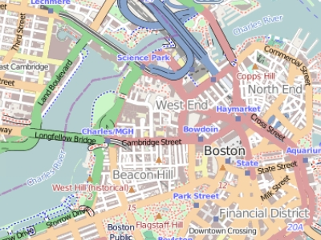
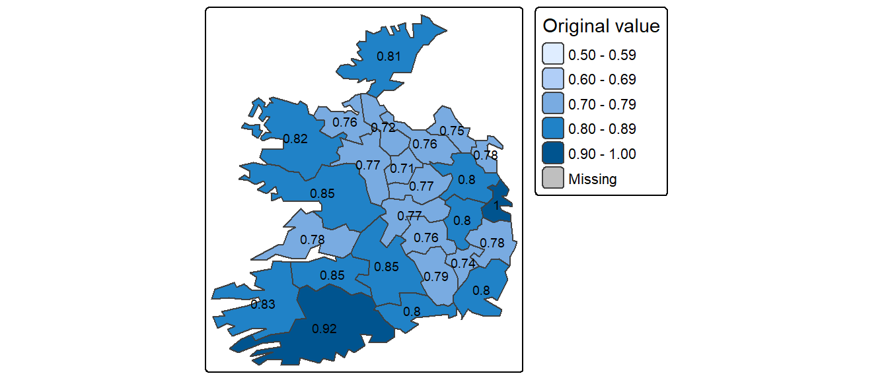
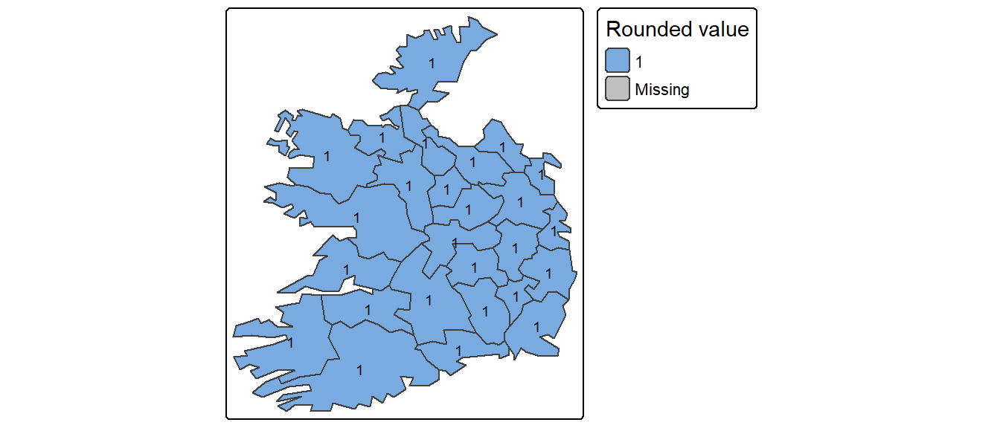

2 Feature Representation
2.1 Introduction
Before we can analyze or visualize spatial data in a GIS, we must first decide how to represent real-world phenomena in a digital environment. This chapter introduces the foundational data models used in GIS–vector and raster–and explores how different types of geographic features are encoded using these models. Understanding how features are represented is essential for making informed decisions about data collection, storage, analysis, and visualization.
We’ll also examine conceptual frameworks such as the object vs. field view of the world, the role of scale in determining how features are modeled, and how attribute data are structured and classified. These concepts form the backbone of spatial data modeling and are critical for interpreting and working with spatial data effectively throughout the rest of the course.
2.2 Vector vs. Raster
To work in a GIS environment, real world observations (objects or events that can be recorded in 2D or 3D space) need to be reduced to spatial entities. These spatial entities can be represented in a GIS as a vector data model or a raster data model.
2.2.1 Vector
Vector features can be decomposed into three different geometric primitives: points, polylines and polygons.
Vector data models are used to represent discrete features like roads, buildings and boundaries. They also benefit from supporting rich attribute data and precise geometry.
Let’s explore how different types of features are represented using the vector model.
2.2.1.1 Point

A point is composed of one coordinate pair representing a specific location in a coordinate system. Points are the most basic geometric primitives having no length or area. By definition a point can’t be “seen” since it has no area; but this is not practical if such primitives are to be mapped. So points on a map are represented using symbols that have both area and shape (e.g. circle, square, plus signs).
We seem capable of interpreting such symbols as points, but there may be instances when such interpretation may be ambiguous (e.g. is a round symbol delineating the area of a round feature on the ground such as a large oil storage tank or is it representing the point location of that tank?).
2.2.1.2 Polyline

A polyline is composed of a sequence of two or more coordinate pairs called vertices. A vertex is defined by coordinate pairs, just like a point, but what differentiates a vertex from a point is its explicitly defined relationship with neighboring vertices. A vertex is connected to at least one other vertex.
A polyline represents length. Like a point, a true line can’t be seen since it has no area. And like a point, a line is symbolized using shapes that have a color, width and style (e.g. solid, dashed, dotted, etc…). Roads and rivers are commonly stored as polylines in a GIS.
2.2.1.3 Polygon

A polygon is composed of three or more line segments whose starting and ending coordinate pairs are the same. Sometimes you will see the words lattice or area used in lieu of polygon.
Polygons represent both length (i.e. the perimeter of the area) and area. They also embody the idea of an inside and an outside; in fact, the area that a polygon encloses is explicitly defined in a GIS environment. If it isn’t, then you are working with a polyline feature. If this does not seem intuitive, think of three connected lines defining a triangle: they can represent three connected road segments (thus polyline features), or they can represent the grassy strip enclosed by the connected roads (in which case an ‘inside’ is implied thus defining a polygon).
2.2.2 Raster

A raster data model uses an array of cells, or pixels, to represent real-world objects. Raster datasets are commonly used for representing and managing imagery, surface temperatures, digital elevation models, and any other continuous data.
A raster can be thought of as a special case of an area object where the area is divided into a regular grid of cells. While rasters are often described as grids of cells, they can also be thought of as arrays of spatially referenced values, each tied to a specific location in space.
In a raster data model, each cell (or pixel) is explicitly associated with a value, representing a measurement or classification at that location. This contrasts with the vector model, where attribute values are linked to geometric features (points, lines, or polygons) and may not be defined for every location in space.
Raster datasets are organized as regular grids that are typically square in shape. If the spatial features of interest do not occupy the entire extent of the grid, the remaining cells are assigned special values such as NULL or NoData to indicate the absence of valid data.
2.3 Object vs. Field
While the vector/raster distinction focuses on data structure, the object vs. field perspective focuses on how we conceptualize spatial phenomena. This distinction is especially useful when deciding how to model and analyze different types of spatial features.
2.3.1 Object View
The object view treats spatial features as discrete entities that exist independently and occupy specific locations. These features do not occur everywhere in space. Examples include point locations of cities, road networks, or polygonal representations of land parcels or urban areas. Objects are typically represented using the vector data model.
2.3.2 Field View
The field view treats spatial phenomena as continuous surfaces or distributions that vary across space. A field is a property that can be measured at any location within a study area. Common examples include surface elevation, temperature, or precipitation. These are typically represented using the raster data model but can be represented with polygons.
Some features can be represented as either objects or fields, depending on the analytical context. For instance, the presence or absence of buildings can be modeled as:
- Objects, if we are interested in the location and shape of individual buildings.
- Fields, if we are interested in identifying areas where buildings do or do not exist (e.g., using a binary raster where 1 = presence, 0 = absence).

Ultimately, the choice between object and field representations depends on the nature of the phenomenon and the goals of the analysis.
2.4 Scale
In GIS, scale refers to the ratio between a distance on the map and the corresponding distance in the real world. For example, a scale of 1:10,000 means that one unit on the map represents 10,000 units on the ground.
It’s important to distinguish between two uses of the term:
- Cartographic scale refers to the map’s level of detail.
- Analytical scale refers to the spatial extent or resolution of a study.
In cartographic terms, a large scale map (e.g., 1:10,000) shows a small area in great detail, while a small scale map (e.g., 1:10,000,000) shows a large area with less detail. This is opposite to how “large scale” is often used in everyday language, where it implies a broad or extensive scope.
The following two maps of the Boston region illustrate this difference:
- At a small scale (1:10,000,000), Boston and other cities may be represented as simple points.
- At a large scale (1:34,000), Boston may be represented as a detailed polygon, and roads may appear as polygons rather than simple lines.


Understanding scale is essential for choosing appropriate data and representation methods in GIS analysis.
2.5 Attribute Tables
In GIS, attributes are non-spatial data that describe the characteristics of spatial features such as a city’s population, a road’s name, or a parcel’s land use type. A feature on a GIS map is linked to its record in the attribute table by a unique numerical identifier (ID).
Each feature in a GIS layer is associated with one or more records in the attribute table, enabling a one-to-one or many-to-one relationship between geometry and descriptive data. Most GIS software allows users to click on a map feature and view its associated attributes directly.
Raster datasets also store attribute information. In such case, each unique integer value may correspond to a class label or description if the attribute is categorical in nature. However, most raster datasets used in this course will represent continuous data stored as an integer or double.
2.5.1 Measurement Levels
Attribute data can be broken down into four measurement levels:
Nominal data which have no implied order, size or quantitative information (e.g. paved and unpaved roads)
Ordinal data have an implied order (e.g. ranked scores), however, we cannot quantify the difference since a linear scale is not implied.
Interval data are numeric and have a linear scale, however they do not have a true zero and can therefore not be used to measure relative magnitudes. For example, one cannot say that 60°F is twice as warm as 30°F since when presented in degrees °C the temperature values are 15.5°C and -1.1°C respectively (and 15.5 is clearly not twice as big as -1.1).
Ratio scale data are interval data with a true zero such as monetary value (e.g. $1, $20, $100).
2.5.2 Data type
In GIS, choosing the correct data type for an attribute is essential for accurate data storage, efficient processing, and meaningful analysis. ArcGIS supports several common data types, including integer, float, double, and text. The choice of data type should align with the attribute’s measurement level and intended use.
The following table summarizes popular data types available in most GIS applications:
| Type | Stored values | Note |
|---|---|---|
| Short integer | -32,768 to 32,767 | Whole numbers |
| Long integer | -2,147,483,648 to 2,147,483,647 | Whole numbers |
| Float | -3.4 * E-38 to 1.2 E38 | Real numbers |
| Double | -2.2 * E-308 to 1.8 * E308 | Real numbers |
| Text | Up to 64,000 characters | Letters and words |
While whole numbers can be stored as floats or doubles (e.g., storing 2 as 2.0), doing so increases storage requirements. This may not be a concern for small datasets, but for large datasets with tens of thousands of records, it can impact file size and processing speed.
Conversely, storing decimal values as integers can lead to significant data loss. For example, values such as 0.2, 0.01, 0.34, 0.1, and 0.876 would all round to either 0 or 1, obscuring meaningful differences. This can distort map outputs, especially in choropleth visualizations, where subtle variations are important as shown in the following two figures.


2.6 Summary
This chapter introduces the foundational concepts of how geographic features are represented in a GIS environment. It begins by distinguishing between the two primary data models–vector and raster–and explains how real-world entities are encoded as points, lines, polygons, or grids of cells.
The discussion then shifts to conceptual frameworks, including the object vs. field view of spatial phenomena, which helps clarify how the same feature can be represented differently depending on the analytical context. The importance of scale is also addressed, with a focus on how map detail and spatial extent influence representation choices.
Finally, the chapter explores attribute tables, which store non-spatial information linked to spatial features, and introduces key concepts such as measurement levels (nominal, ordinal, interval, ratio) and data types (integer, float, double, text). These distinctions are critical for ensuring accurate data storage, querying, and analysis in GIS workflows.